HELP FIND THE FOLLOWING CARIBBEAN LOCATIONS
PAGE 200
DANGER MAN: Shinda Shima (Peter Yates:1965)
Unknown 1 - Fisherman is diving off this island when he is attacked by a frogman.
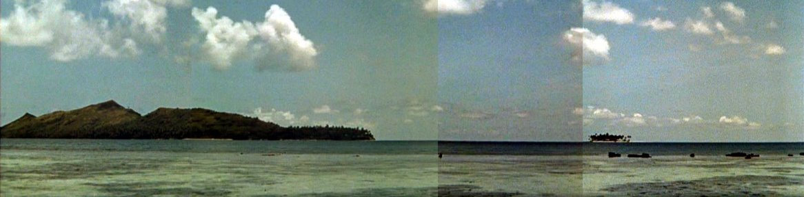
Unknown 2 - Drake is sent to the Island of Shinda Shima on the next stage of his journey.


Unknowns 5 to 9 - Drake returns to the fishing village with Miho. Later the villagers make their way back to the island of Shinda Shima.
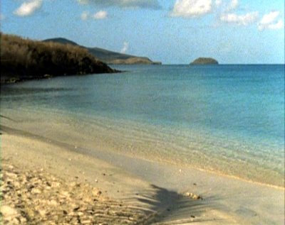

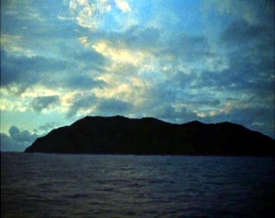
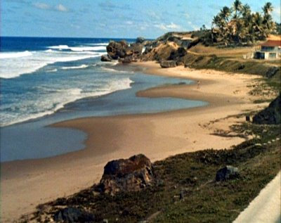

Unknown 10 (World Backgrounds clip footage 303275) - Drake returns to the fishing village with Miho. Later the villagers make their way back to the island of Shinda Shima.
Also
seen in DANGER
MAN: The
Man on the Beach
(Peter Yates: 1965)
Unknown
12 – Drake looks
out to sea from Native hut near the Kilrush
residence.
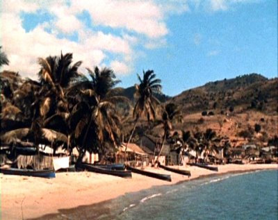
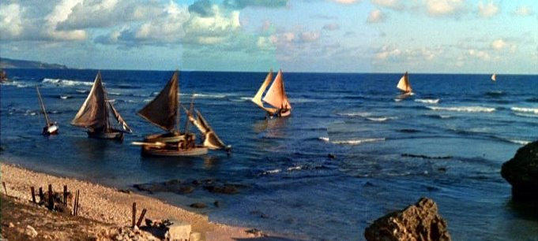
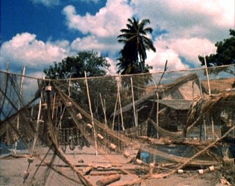
 This long
stock footage sequence also
includes images of holiday makers and a steel band. So this is a
Caribbean
island.
This long
stock footage sequence also
includes images of holiday makers and a steel band. So this is a
Caribbean
island.
THE SAINT:
Island of Chance
(Leslie Norman: January 1967)
Christainsted
Harbour, St. Croix, U.S. Virgin Islands: Simon
catches the plane to
Charles Krayford’s
Caribbean island and finds photojournalist Marla Clayton is a fellow
passenger.

 See this
clip in YouTube.
See this
clip in YouTube.
Unknown 1: Simon and Marla pass through a local town in Jeep.

Judith's
Fancy, St Croix, US Virgin Islands: Simon and
Marla travel
to the site of the Martello tower.
(Identified by Pierre Alfonsi, May 2023)
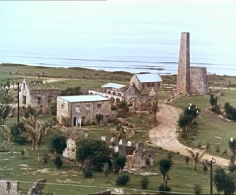
Unknown 2: Simon suggests they search the Martello tower.
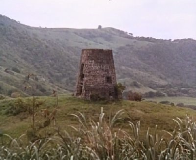
 Not a
Martello tower, but the base of a windmill used in the sugar industry.
Not a
Martello tower, but the base of a windmill used in the sugar industry.
THE SAINT:
The Saint Bids Diamonds
(Leslie Norman, April/May 1965)
Unknown:
Christine Graner
and Simon
stop for drink in local hotel.
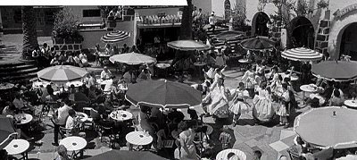
THE SAINT:
The Old Treasure Story
(Roger Moore, May/June 1965)
English
Harbour, Antigua, Antigua and Barbuda:: Duncan
Rawl’s
yacht waits at the dock for the
other treasure hunters to arrive.

Antigua, Antigua and Barbuda: Rawl’s yacht sets out to Corda Cay.
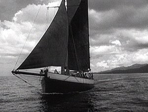
Unknown: From Rawl’s yacht, the treasure hunters spot Corda Cay for the first time.
Also seen in DANGER MAN: Shinda Shima

 Stock
footage for this episode has already featured St. Thomas in the US
Virgin
Islands. St. Georges, Grenada and St. Croix, US Virgin Islands are also
popular
Caribbean stock footage locations.
Stock
footage for this episode has already featured St. Thomas in the US
Virgin
Islands. St. Georges, Grenada and St. Croix, US Virgin Islands are also
popular
Caribbean stock footage locations.
Montagu Beach Hotel, Nassau, Bahamas - The Royal Jamaican Hotel where Drake is working undercover.
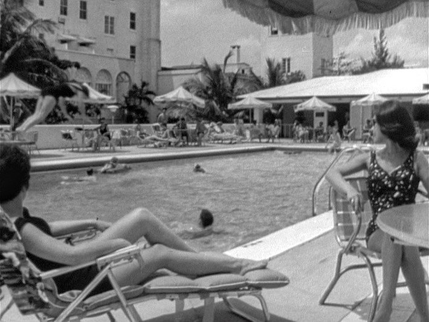
Unknown 1 - The Royal Jamaican Hotel where Drake is working undercover.
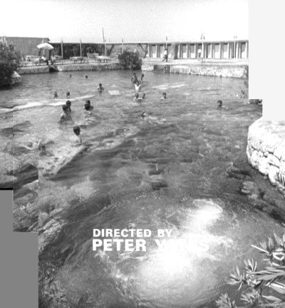
Unknowns 2 and 3 - Establishing shots of Jamaica.
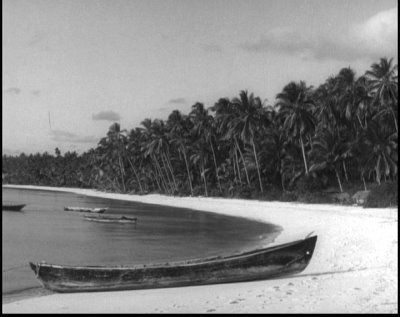
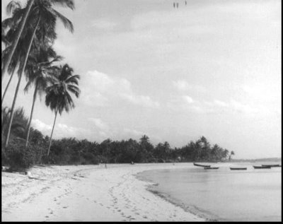
Unknown 4 – Drake goes to the Kilrush holiday home looking for Sir Alan Gross.
Also seen in DANGER
MAN: A
Man to be Trusted (Peter Maxwell: June 1964)
Unknown 1
– The home of
the Corlanders
in Topeka
Bay.


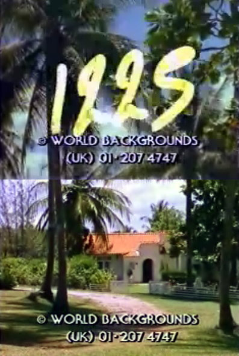
 World
Backgrounds clip 1225
World
Backgrounds clip 1225
Unknown 5 – Drake goes to Fern Gulley looking for Sir Alan Gross.
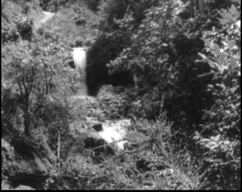
 Footage
from Travelogue 'Wings Over Jamaica'
Footage
from Travelogue 'Wings Over Jamaica'
DANGER MAN:
Parallel Lines
Sometimes Meet (Don Chaffey: February 1965)
Unknown 1
– Drake reports to the World Travel
offices in Port-au-Prince.
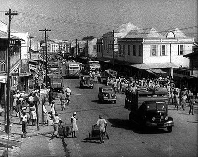
Frederick
Street, Port of Spain,
Trinidad – Drake reports to the World Travel
offices in Port-au-Prince.
(Identified by Paul Stroud,
June 2014)


Unknown 2 – Drake reports to the World Travel offices in Port-au-Prince.
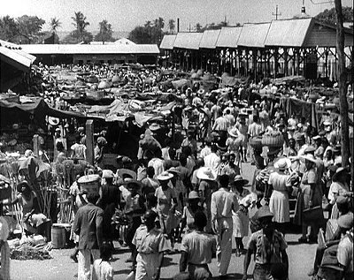
DANGER MAN:
A Man to be Trusted
(Peter Maxwell: June 1964)
Sangster
International Airport, Montego Bay,
Jamaica – John Drake arrives at the Caribbean
airport posing
as a detective Superintendent
Grant.
(Identified by Paul Stroud, March 2014)
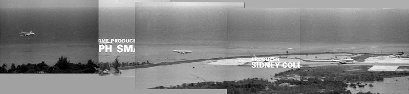
Also
seen in DANGER MAN:
A Date
with Doris (Quentin Lawrence: 1964)
Sangster
International Airport, Montego Bay,
Jamaica – John Drake flies into Cuba posing as
journalist John
White.
(Identified by Paul Stroud,
March 2014)
And DANGER MAN:
Parallel Lines
Sometimes
Meet
Sangster
International Airport, Montego Bay,
Jamaica – Drake
flies in to Port-au-Prince.
(Identified by Paul Stroud,
March 2014)


 Footage
from Travelogue 'Wings Over Jamaica'
Footage
from Travelogue 'Wings Over Jamaica'
Unknown 1 – Drake is taken by Mora To Robert Corlander’s house.

Think you know a spot? Need a bigger image? Email me.
< Previous | Index | Avengerland | Next >
Copyright © 2003 Anthony R. McKay